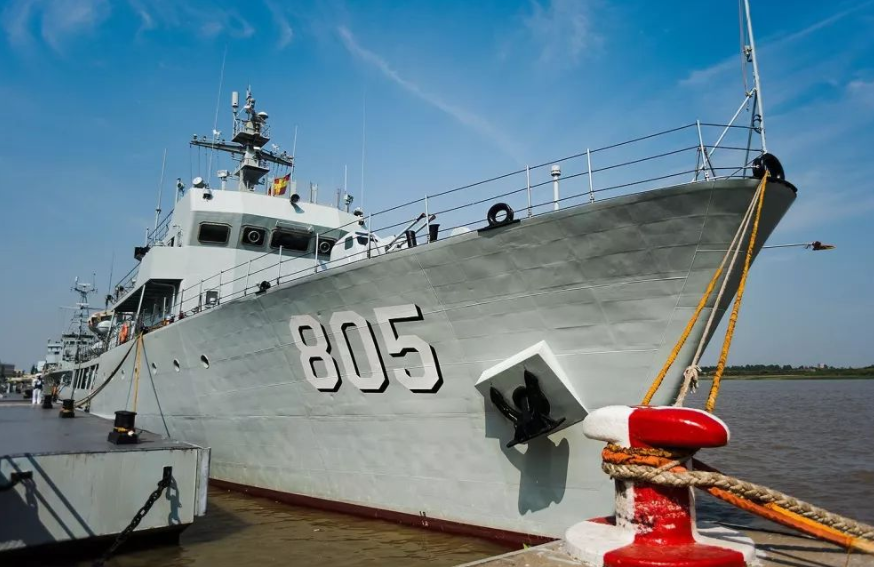

“后勤奶妈”——辅助舰艇

*901型远洋补给舰首舰-呼伦湖舰
简介
辅助舰艇是一类执行海上战斗保障、技术保障和后勤保障任务而不直接参加对敌作战的各种舰艇的统称，又称辅助舰船或军辅船。用于海上作战保障、技术保障和勤务保障。 其包括修理舰、练习舰、供应舰、补给舰、侦察船、靶船、捞雷船、医院船、消磁船、损管船、研究试验船、巡逻艇以及某些运输船、工程船等。 现代勤务舰船，已不只是担负辅助性任务，它们与作战舰艇编队一起共同完成海军担负的各项任务，是海军组成中不可缺少的保障船只。
任务定位
辅助舰艇，顾名思义，是辅助各类军舰执行任务的船只，虽然她们不直接参与战争 但她们不可或缺。 补给舰可以为在外巡航的军舰提供及时补给，侦察舰可以为舰队提供情报，医疗舰堪称海军的 海上医院，破冰船可以执行多种冰区任务。 此外，扫雷艇的扫雷任务危险系数高、任务难度大，是所有军舰致敬的对象。

*081型扫雷艇-张家港舰
相关知识
中国现役辅助舰艇数目众多，包括908型、903型、901型、904型综合补给舰，904A型、904B型船坞补给舰、各式电子侦察船、训练舰等
常见辅助舰艇的命名规则：综合补给舰-以“湖”命名；扫雷舰-由“州”或“县”命名；电子侦察船-由“星”命名；
训练舰、武器试验舰-由人名命名。